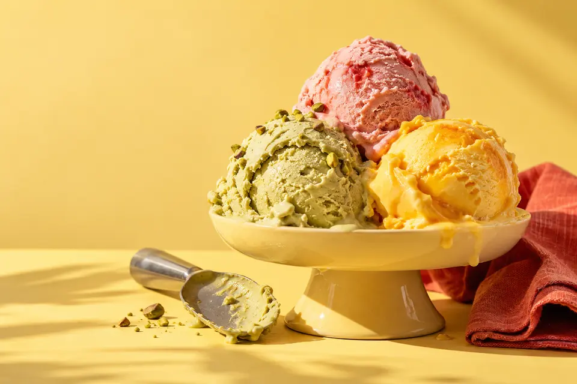

גלידה שאוהבת
את הקיץ.
SCOOP מתחילה מרעיון פשוט: צהוב של שמש, אדום של קיץ וטעם אחד שאי אפשר להישאר איתו לבד.
העמוד הזה בנוי סביב הבחירה. מסמנים טעם, רואים אותו בצבע שלו, ומרכיבים שילוב.

גלידה איטלקית בצבעים של קיץ. בוחרים טעם, מרכיבים שילוב, וממשיכים את היום.
לכל הטעמים01
עוד אין טעם בקטגוריה הזו. נחזור עם חדשים.
02
עד שלושה טעמים. הטעם שבחרתם נכנס לשילוב, ואפשר להעתיק אותו ולהראות בדלפק.
SCOOP מתחילה מרעיון פשוט: צהוב של שמש, אדום של קיץ וטעם אחד שאי אפשר להישאר איתו לבד.
העמוד הזה בנוי סביב הבחירה. מסמנים טעם, רואים אותו בצבע שלו, ומרכיבים שילוב.